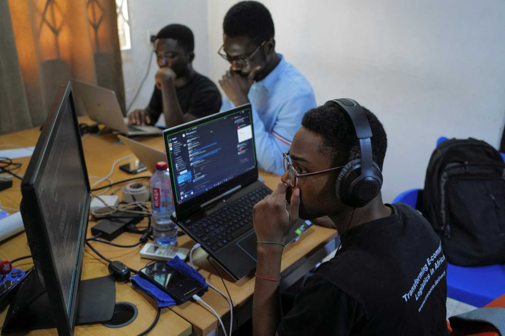
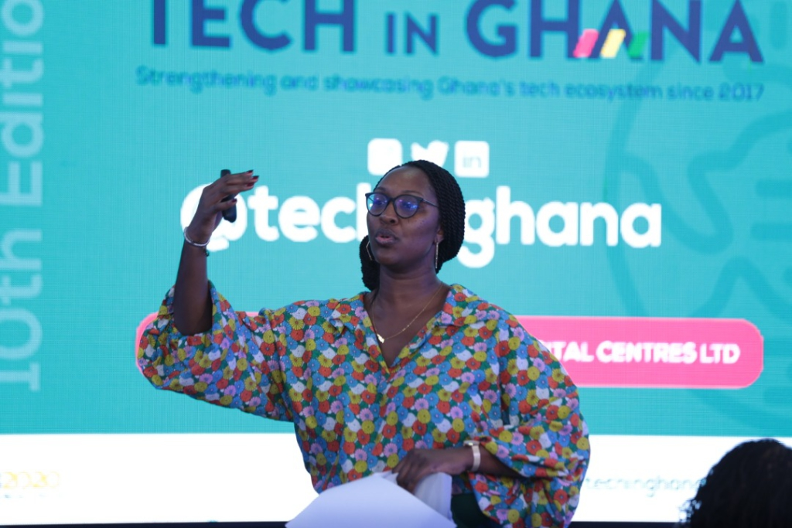
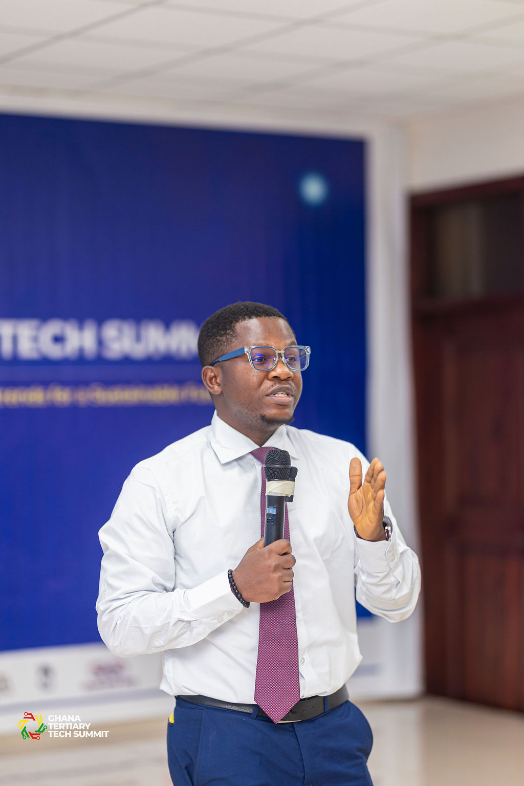

History of TechCon
Founded in 2012, TechCon began as a small meetup for technology enthusiasts in Silicon Valley. Over the years, it has evolved into a global stage for innovators, entrepreneurs, and industry leaders to share insights and showcase breakthroughs. From its humble beginnings, TechCon now welcomes over 10,000 attendees each year.

Our Mission
At TechCon, we are committed to fostering innovation, collaboration, and education in the tech industry. Our goal is to bridge the gap between cutting-edge technologies and real-world applications, empowering individuals and organizations to create a better future.

Notable Past Speakers
Samantha Lee
Samantha Lee, CEO of NovaTech, is a leader in renewable energy solutions. Her keynote at TechCon 2023 emphasized the role of technology in combating climate change, inspiring thousands to take action.

Raj Patel
Raj Patel is a renowned software engineer and the architect behind several groundbreaking AI platforms. His sessions at TechCon 2022 focused on ethical AI development and practical applications of machine learning.

Isabella Martinez
Isabella Martinez, a cybersecurity advocate and author, has dedicated her career to raising awareness about online security. Her talks at TechCon 2021 and 2023 have empowered businesses and individuals to protect their digital assets.
